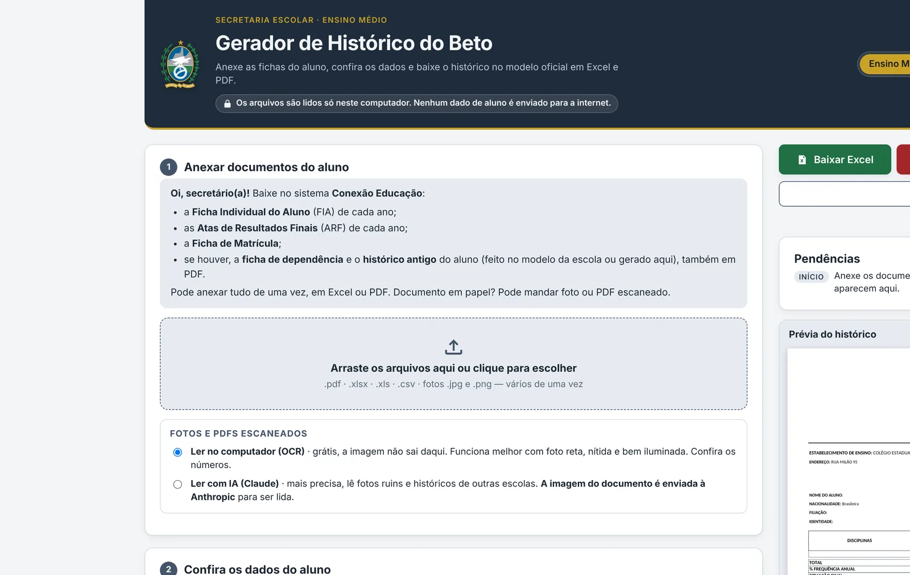
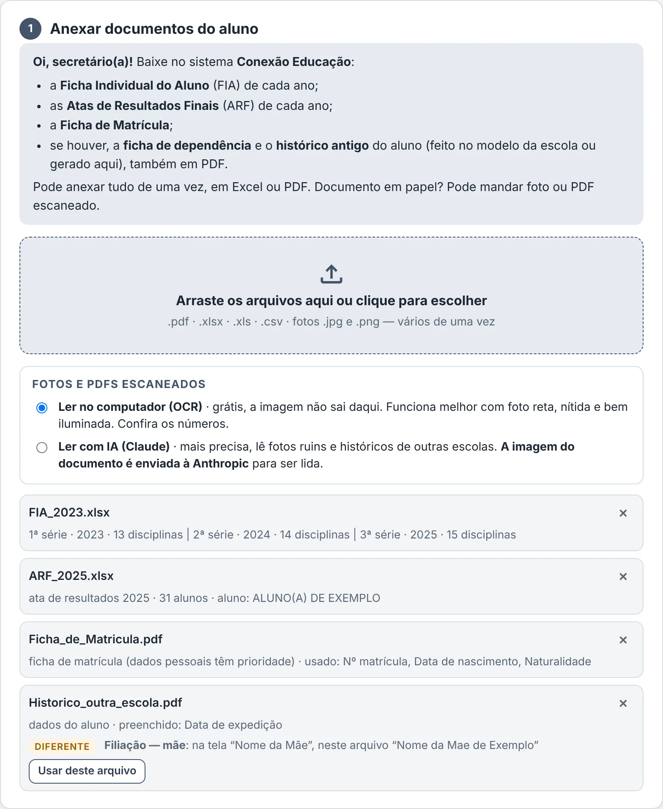
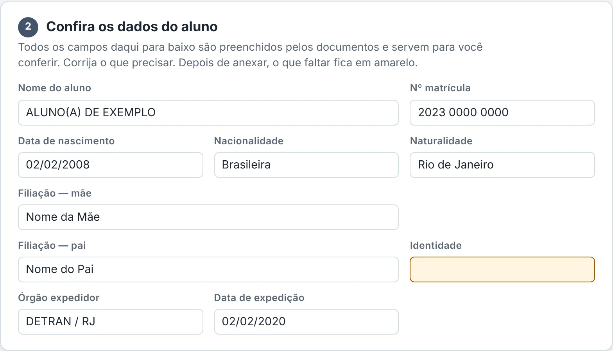
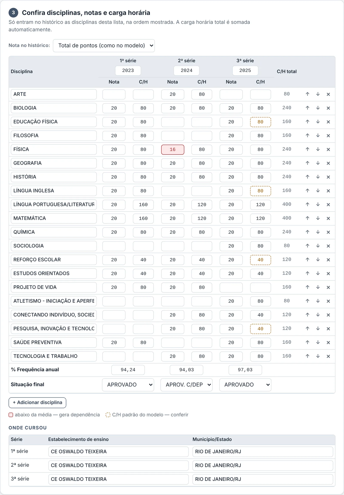
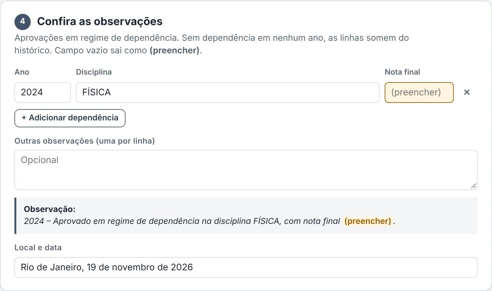
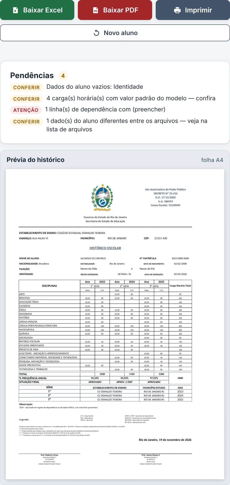
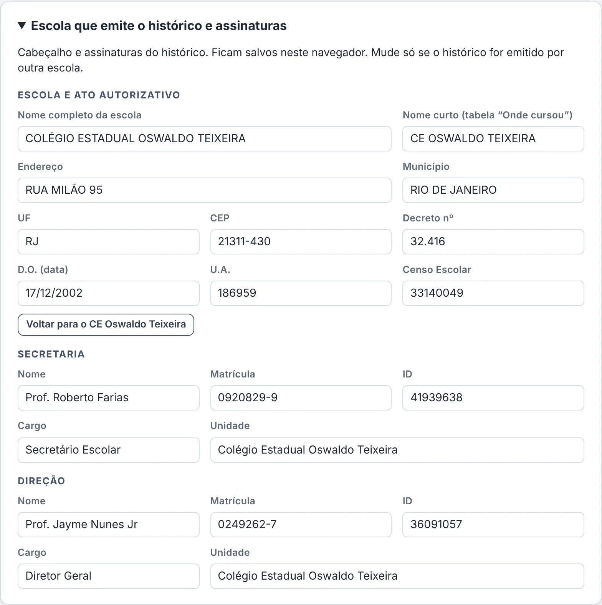

1Baixar os documentos no Conexão Educação
Para cada aluno, baixe no sistema Conexão Educação, em Excel ou PDF:
- Ficha Individual do Aluno (FIA) de cada ano cursado. Traz notas, carga horária, frequência, escola e resultado do ano.
- Ata de Resultados Finais (ARF) da turma de cada ano. Traz o número de matrícula e confirma a situação final.
- Ficha de Matrícula. Traz os dados pessoais e o documento de identidade (RG, órgão e data de expedição).
- Se houver: a ficha de dependência e o histórico antigo do aluno.
Os dados pessoais (nome, nascimento, filiação, naturalidade, RG) sempre vêm da ficha de matrícula quando ela é anexada. FIA e ata só completam o que faltar.
2Escolher Regular ou EJA
No topo da página, escolha Ensino Médio Regular · 3 séries ou EJA · 4 módulos. O histórico muda de modelo na hora: 3 colunas no Regular, 4 na EJA.
Se você esquecer, a página troca sozinha quando reconhece o tipo do documento (por exemplo, turma "EJA", "Modalidade: REGULAR" ou ficha com 4 bimestres) e mostra no topo uma faixa amarela Confira o modelo. Se a troca estiver errada, clique no tipo certo e anexe de novo. Se chegarem documentos dos dois tipos para o mesmo aluno, a página não troca: só avisa, para você conferir.

3Anexar os documentos
Arraste todos os arquivos do aluno para a área tracejada, ou clique nela para escolher. Pode mandar tudo de uma vez e em qualquer ordem.
Cada arquivo aparece numa lista, com o que foi lido nele. Por exemplo: "1ª série · 2023 · 13 disciplinas".

- Aviso "Diferente": um arquivo traz um dado diferente do que já está na tela. Nada é trocado sozinho. Clique em Usar deste arquivo se o novo valor estiver certo.
- Ata da turma sem aluno identificado: se você anexar só a ata, aparece uma lista para escolher o aluno. Com a FIA ou a ficha de matrícula anexada, o aluno é encontrado sozinho.
- Documento de outro aluno: se você anexar, sem querer, um arquivo de outro aluno, ele é recusado com o aviso "Este documento é de outro aluno". Para começar outro aluno, use o botão Novo aluno.
- Documento do ensino fundamental: é ignorado. A lista mostra "Documentação do ensino fundamental: dados não são necessários no histórico do ensino médio."
- Arquivo errado? Clique no ✕ ao lado dele para tirá-lo da lista.
4Conferir os dados do aluno
Todos os campos são preenchidos pelos documentos, e todos podem ser editados: clique no campo e digite. A prévia do histórico, à direita, muda na hora.

Datas no formato dd/mm/aaaa, por exemplo 08/07/2005.
5Conferir notas e carga horária
A tabela mostra só as disciplinas que o aluno cursou. Cada série (ou módulo, na EJA) tem uma coluna de Nota e uma de C/H. A carga horária total é somada sozinha.

- Ano da série: o campo com o ano fica no topo de cada coluna.
- Nota no histórico: é sempre o total de pontos. Regular bimestral: soma dos 4 bimestres, mínimo 20 para aprovar. Regular trimestral: soma dos 3 trimestres, mínimo 15. EJA: soma dos 2 bimestres do módulo, mínimo 10. Se a ficha só traz a média, a nota é a média × 4, × 3 ou × 2.
- Frequência e situação final de cada ano ficam no fim da tabela. As opções de situação são APROVADO, APROV. C/DEP, PROMOV, CLASSIFICADO (OBS.), REP FREQ e REP NOTA. Ao usar CLASSIFICADO, escreva a justificativa em "Outras observações". Ao escolher "APROV. C/DEP", uma linha de dependência é criada nas observações.
6Conferir onde o aluno cursou
Logo abaixo da tabela de notas, em Onde cursou, ficam a escola e o município de cada série (na EJA, também o semestre). A escola vem da FIA de cada ano. Quando o documento não traz o município, confira esse campo.
7Conferir as observações
Aqui ficam as aprovações em regime de dependência. Cada linha tem ano, disciplina e nota final.

- Sem dependência em nenhum ano: as linhas somem do histórico.
- Promovido em 2020 ou 2021: a frase da resolução entra sozinha, com o ano. 2020: "Amparado pela Resolução SEEDUC/SUGEN nº 5.879/2020 publicada no D.O. de 14/10/2020." 2021: "Amparado pela Resolução SEEDUC/SUGEN nº 6015/2021 publicada no D.O. de 14/12/2021." Basta a situação final daquele ano estar como PROMOV.
- Nota da dependência: digite no campo "Nota final" ou anexe a ficha de dependência, que preenche sozinha.
- + Adicionar dependência cria uma linha nova; o ✕ remove.
- Outras observações: escreva uma por linha na caixa de texto. Elas entram no histórico.
- Local e data: já vem com a data de hoje. Pode trocar.
8Baixar, imprimir e começar outro aluno

Pendências lista o que falta conferir. Quando aparecer "Tudo preenchido. Pode baixar.", o histórico está completo.
Conferência automática: a cada mudança, a página gera o Excel e o PDF, lê os dois de volta e compara com a tela: dados do aluno, anos, notas, C/H, frequência, situação, escolas e dependências. Também confere se cada texto cabe na sua célula. Quando tudo bate, aparece ok. Se algo não bater, ela mostra o quê e onde, e os botões de baixar e imprimir avisam antes.
- Baixar Excel: a planilha no modelo da escola, com o brasão. Dá para fazer ajustes finais no próprio Excel.
- Baixar PDF: pronto para enviar por e-mail ou arquivar.
- Imprimir histórico: imprime só o histórico, numa folha A4.
- Imprimir documentos para assinatura: imprime o conjunto completo, nesta ordem: ficha de matrícula; cada ficha individual (FIA) seguida das fichas de dependência daquele ano ou módulo; as atas de resultados finais; e o histórico. Fichas, dependências e atas saem em folha deitada; matrícula e histórico, em pé. O botão PDF ao lado baixa esse mesmo conjunto.
- Nos documentos do C.E. Oswaldo Teixeira, os nomes e matrículas do secretário e do diretor já vêm embaixo do espaço de assinatura.
- Nos documentos de outra escola não há assinatura; aparece em vermelho “Extraída do sistema Conexão Educação no dia …”.
- Toda dependência ganha uma página própria. Se você não enviou a ficha de dependência, o site monta uma no modelo oficial; os campos que ele não conhece ficam em branco para preencher à mão.
- Nas atas, a linha do aluno sai em negrito e com letra um pouco maior.
- A ficha de matrícula é refeita como página nova, com os dados da ficha do Conexão (e as correções feitas na tela), sem o cabeçalho e o rodapé do navegador e sem assinaturas digitalizadas. Os nomes e matrículas do diretor e do secretário vêm no rodapé para assinar à mão. Se a ficha enviada for foto ou digitalização, confira os campos: eles vêm da leitura automática. Para corrigir, abra o quadro Ficha de matrícula, logo abaixo do item 2.
- A impressão usa o próprio PDF, com qualidade de impressão nova (não de digitalização).
- Novo aluno: apaga tudo do aluno atual: dados, notas, observações e a lista de arquivos. Clique duas vezes para confirmar. Se algum arquivo ainda estiver sendo lido, a leitura é cancelada. A mensagem "Tudo zerado" confirma que deu certo.
Na página dentro do Claude, a impressão direta é bloqueada. Lá, os botões de impressão baixam o PDF para você imprimir.
9Escola emissora e assinaturas
No fim da página, abra Escola que emite o histórico e assinaturas. Ali ficam o nome da escola, endereço, município, CEP, decreto, D.O., U.A., Censo e as assinaturas da secretaria e da direção.

Só mude se o histórico for emitido por outra escola. O botão Voltar para o CE Oswaldo Teixeira restaura o padrão.
10Guia rápido: como editar cada informação
| Quero mudar… | Onde e como |
|---|---|
| Nome, nascimento, filiação, RG | Passo 2 da página, "Confira os dados do aluno": clique no campo e digite. |
| Uma nota ou carga horária | Tabela do passo 3: clique na célula e digite. Use vírgula: 7,5. |
| O ano de uma série | Campo com o ano no topo da coluna da série. |
| Incluir uma disciplina | + Adicionar disciplina embaixo da tabela, depois digite o nome. |
| Tirar uma disciplina | ✕ no fim da linha. |
| Mudar a ordem das disciplinas | Setas ↑ e ↓ no fim da linha. |
| Frequência ou situação final | Últimas linhas da tabela de notas. |
| Escola ou município de um ano | Tabela "Onde cursou", logo abaixo das notas. |
| Dependência e sua nota | Passo 4 da página, "Confira as observações". |
| Data no fim do histórico | Campo "Local e data", no passo 4 da página. |
| Cabeçalho da escola e assinaturas | Painel "Escola que emite o histórico e assinaturas", no fim da página. |
Toda mudança aparece na prévia à direita na hora. Confira a prévia antes de baixar.
11Fotos e PDFs escaneados
Documento só em papel? Mande uma foto (JPG ou PNG) ou um PDF escaneado. No quadro Fotos e PDFs escaneados, embaixo da área de anexos, escolha como ler:
Ler no computador (OCR)
Grátis, e a imagem não sai do computador. Funciona bem com digitalização ou foto reta, nítida e com boa luz. Sempre confira os números.
Ler com IA (Claude)
Mais precisa, lê fotos ruins e históricos de outras escolas. A imagem é enviada à Anthropic. No site, pede uma chave da API Anthropic, cobrada por uso.
Para o OCR ler bem: foto tirada de cima, papel inteiro e reto, sem sombra. Fotos de iPhone em HEIC precisam ser convertidas para JPG.
- Prefira sempre o PDF original do Conexão (o arquivo baixado ou "Salvar como PDF"), e não a folha impressa e escaneada. O PDF original é lido sem erro nenhum; a folha escaneada depende da qualidade da imagem.
- Dados pessoais lidos de imagem ficam com borda laranja tracejada e aparecem na conferência automática, para você conferir letra por letra.
- Uma ficha de matrícula escaneada não tem prioridade: ela só preenche campos vazios e mostra as diferenças para você decidir.
- Datas e números ilegíveis ou impossíveis (como mês 16) não são usados: o campo fica vazio, em amarelo, para você digitar.
12Dúvidas comuns
- Os dados dos alunos vão para a internet? Não. Os arquivos são lidos no seu navegador. A única exceção é a opção "Ler com IA", desligada por padrão.
- Apareceu "Não encontrei a tabela de disciplinas". O arquivo não é uma ficha, ata ou histórico, ou é de outro formato. Para documentos de outras escolas, use "Ler com IA".
- PDF que é só imagem: a página percebe e usa o OCR, ou a IA se estiver ligada.
- A página mostra a versão antiga. Aperte Ctrl + F5.
- Quero corrigir um histórico já gerado. Anexe o Excel ou o PDF dele: a página lê de volta tudo o que estava preenchido.